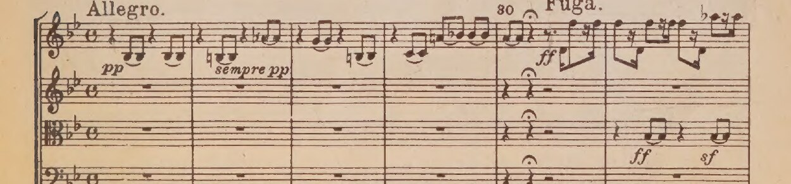

Große Fuge: anatomy of a fugue
The subject, its four presentations, and the form it refuses — with nine engraved examples, audio and MIDI
Beethoven’s Große Fuge is 741 bars of music built on nine notes. It was written as the finale of the Quartet in B flat, op. 130, withdrawn after the first performance, and published in 1827 as a separate work with a piano-duet arrangement beside it — the only piece of its size Beethoven allowed to stand outside the genre that produced it. The pages below read it section by section: the subject, the Overtura, the first fugue and its variations, the slow fugue, the scherzo, the last fugue. Every subject entry is engraved, marked, playable in the browser, and downloadable as MIDI.
primary subject (S1) countersubject (S2) answer
1The subject
The subject is a single phrase of nine notes — ten attacks, since its first note is repeated. It does three things at once: it circles the tonic chromatically, it leaps by compound intervals, and it closes with a gesture that spells a name.
| note | degree in B♭ | interval from previous |
|---|---|---|
| B♭3 | 1 | — |
| B♭3 | 1 | 0 |
| B♮3 | ♯1 | +1 |
| A♭4 | ♭7 | +10 |
| G4 | 6 | −1 |
| B♮3 | ♯1 | −8 |
| C4 | 2 | +1 |
| A4 | 7 | +9 |
| B♭4 | 1 | +1 |
Read down the interval column and the design appears: semitone, compound leap, semitone, compound leap, semitone, compound leap, semitone. Every step is a semitone, every leap is a sixth or a seventh, and the leaps alternately rise and fall — up a minor seventh, down a minor sixth, up a major sixth, each one immediately corrected by a step. Between them the steps and leaps carry the line from B♭3 to B♭4: the subject rises exactly an octave while never repeating a pitch class except its first and last note.
Two consequences matter for everything that follows. First, the subject is chromatic without being in a key: it touches ♯1, ♭7, 6, 2 and 7, and returns to 1 without a cadence, without a dominant, without a single confirmation of its tonic. Second, its last four notes, B♮–C–A–B♭, are H–C–A–B in German lettering — the B-A-C-H motif in retrograde (McCallum 2009, 131). Whether or not one hears the cipher, the shape is the same one the subject began with: a chromatic step and a third, now closing on the tonic instead of leaving it.
The dotted figure above the first entry is the second subject. Its head is a dotted eighth and a sixteenth on every beat, leaping down a minor tenth (F5 to D4) and back — the opposite of S1 in every respect: on the beat rather than off it, diatonic rather than chromatic, widest interval rather than narrowest. The two are set together from the first bar in invertible counterpoint, each a complete phrase with its own cadence, S1 on beats 2 and 4 and S2 on 1 and 3. Nothing in the exposition decides which is the theme and which the accompaniment (Cooper and Meyer 1966, 164–5). The rest of the piece is the working-out of that disagreement.
2The Overtura: four statements of one subject
Thirty bars that are usually called an introduction, and are really a catalogue. Beethoven labels them Overtura — an opening-up, not a prelude — and in them the subject is stated four times, each time in a different condition.
| bars | scoring | metre, key | condition of the subject |
|---|---|---|---|
| 1–10 | all four instruments in octaves | 6/8, G | bare: unharmonised, a fermata on every note |
| 10–19 | four-voice fugato | 6/8, F | in counterpoint: real entries, trills, fermatas |
| 20–25 | Meno mosso e moderato | 2/4, F | slow and chordal, pp |
| 26–30 | violin I alone | 4/4, B♭ | syncopated — the form the fugue adopts |
The fourth of these is the one the fugue takes up at m. 31. The third will return as the Meno mosso at m. 159, the second is the learned style of the last fugue, and the first is the unison that the coda recalls. Kirkendale’s observation that the four are presented in the reverse order of their later use (1963, 15) is exact, and it changes how the piece is heard: the fugue is not a beginning but a return. By the time the viola enters at m. 31 the listener has already heard the subject bare, contrapuntal, slow and syncopated; the fugue can begin in the middle of its own history.
Note, too, what the Overtura does with register and silence. The first statement is not a theme played by one instrument but a line doubled in four octaves: no harmony exists yet, only interval. The second adds counterpoint, the third adds colour, the fourth adds metre — each statement adds exactly one dimension of music to the one before. It is a demonstration of what a subject is, in four steps, and it is the reason the fugue that follows can afford to be so compressed.

3The first fugue: exposition
Four entries, four bars apart, and from the inside of the quartet outwards.
| bar | voice | key | function |
|---|---|---|---|
| 31 | viola | B♭ | subject (S1) |
| 35 | violoncello | F | answer |
| 39 | violin II | B♭ | subject |
| 43 | violin I | F | answer |
All four are real answers. The cello’s is an exact transposition of the viola’s a fifth lower, semitone for semitone, with no tonal adjustment: the subject’s B♮ becomes F♯ and its A♭ becomes E♭. That is a choice with consequences. A real answer leaves the key unconfirmed, and the fourth entry leaves it open still — the exposition closes not in B♭ but hovering between the tonic and its dominant, with nothing settled.
The order is the first strangeness. The subject enters in the viola, the inner voice, underneath a countersubject that has been playing since the first beat; violin II and violin I follow it upwards. The texture is inside-out: the theme emerges from the middle of the chord and works its way to the edges. And because S2 is already in full flight, the subject is not presented but accompanied — it enters as the counterpoint to something that was waiting for it. Beethoven could have begun with the first violin; beginning with the viola is a statement about what kind of piece this is going to be.
The first two entries are engraved in the opening example above: red the viola’s subject, blue the countersubject it enters under, green the cello’s answer at m. 35. The last two follow here.
The second strangeness is that the two subjects are not complementary. Each is a complete phrase with its own cadence; set together, every downbeat of one falls on an offbeat of the other, and the counterpoint produces not a hierarchy but a standoff. Cooper and Meyer call this the problem the work solves over its length (1966, 164–5); Chua observes that the subject is affirmed only at the very end (1995, 231–3).


4The first fugue: three variations
After the fourth entry the fugue stops behaving like a fugue and starts behaving like a set of variations. There is no development section in the fugal sense: the material is re-dressed, and the countersubject is progressively abandoned.
| bars | key | what happens |
|---|---|---|
| 57–78 | E♭ | Variation 1: violin I takes up triplet motion (moto perpetuo), violin II the dotted figure, the viola the subject (Grew 1931b, 255). The subdominant — the key the exposition never confirmed. |
| 79–138 | B♭ | Variation 2: a stretto of the second subject in viola and cello from m. 79, the triplets turning into a gallop of an eighth plus two sixteenths (Grew 1931c, 99–100). |
| 139–158 | G♭ | Variation 3: violin I takes S2 in triplets, the viola S1 at double speed, violin I’s compound leaps stretched beyond two octaves; the section refuses to resolve and slides to G♭ (Chua 1995, 234). |
The formal point is worth stating plainly: an exposition followed by variations is an aria, not a fugue. Beethoven keeps the word Fuga over music whose procedure is variation, and holds the fugue’s real machinery — stretto of the subject itself, inversion, augmentation — in reserve for the last section. What the first fugue does is test how much of the subject can be varied before it stops being a subject; Variation 3 answers the question by breaking it.
5Meno mosso e moderato: the slow movement
In G♭ major, 2/4, pp, with a new countersubject of flowing sixteenths. The subject is still there, but it is now the tenor of a lyric texture rather than the agent of an argument; Kerman hears “an almost blinding innocence” at the change (1979, 287), Ratner the “silkiest of textures” and its “exquisite moments of glowing diatonism”.
The section is a double fugue in its own right, with looser counterpoint than anything before it: subject and countersubject are combined, separated, and at last brought into canon between cello and first violin. It ends on a cadence in B♭ minor that turns to major — the door through which the last fugue enters.
This is the piece’s second stance. The first fugue argued; this one sings. That a fugue subject can be both is the premise the whole work is built on, and the Meno mosso is where Beethoven proves it, in the least likely key and at the least likely tempo.
6Allegro molto e con brio: the scherzo
6/8, ff, gigue: the third stance, the dance. The subject is hammered out in the dance rhythm over a stamping bass, then taken apart — Chua’s point that Beethoven disfigures the motif here rather than affirming it (1995, 234). A quartet that has spent two hundred bars arguing and singing now stamps.
The section is short and functions as the scherzo of the four-movement shape the work keeps shadowing: slow movement, scherzo, finale. Its material is almost entirely the subject’s own head — the chromatic step and the leap — cut into dance-sized pieces.
7The last fugue: the subject in augmentation
It begins with the cello alone, and with the subject augmented: one note to the bar, in A♭, the nine notes stretched over as many bars while the upper voices answer with its diminished form. Then the fugue proper, with the subject at last in the position of honour — Kerman’s “pride of place” (1979, 289).
What follows is the learned style the Overtura promised in its second statement: stretto, augmentation, diminution, inversion, the subject combined with itself at different speeds. The countersubject has disappeared; the counterpoint is generated entirely out of the subject’s own intervals. This is the point at which the “learned” half of the subtitle — tantôt recherchée — is paid in full.
The last fugue runs for some three hundred bars. It accelerates — the score asks for poco a poco sempre più allegro ed accelerando il tempo — passes through a further G♭ Meno mosso around m. 493, and ends in B♭ major with the subject’s head repeated over a tonic pedal: the one place in the work where the subject is simply asserted, without argument.
8The form as a whole
| bars | section | metre, key | stance |
|---|---|---|---|
| 1–30 | Overtura | 6/8 → 2/4 → 4/4, G/F/B♭ | catalogue of four presentations |
| 31–158 | first fugue | 4/4, B♭ (E♭ in Var. 1) | counterpoint — exposition and three variations |
| 159–232 | Meno mosso e moderato | 2/4, G♭ | lyric — slow double fugue |
| 233–272 | Allegro molto e con brio | 6/8 | dance — scherzo |
| 273–741 | last fugue and coda | A♭, later G♭ and B♭ | learned — augmentation, stretto, coda |
Three readings of this shape are on record. The first treats it as a monstrous fugue — a Baroque fugue with the proportions of a symphony. The second treats it as a suite of four movements compressed into one, each section standing in for a movement: exposition, slow movement, scherzo, finale. The third, argued by Kirkendale (1963) and taken up by Rosen and Levy, hears sonata form: the first fugue an exposition, the Meno mosso and scherzo a development, the last fugue a recapitulation.
Each is defensible because the piece is built to support all three, and the reason is the subject. A theme that states a problem rather than a key cannot generate a form by tonal means; it can only be placed, again and again, in conditions that test it. What looks like a four-movement plan is the sequence of those placements: bare (Overtura 1), contrapuntal (Overtura 2, first fugue), lyric (Meno mosso), danced (Allegro), learned (last fugue). The tantôt libre, tantôt recherchée of the title is not a description of style but the rule of construction: the same subject, now free, now studied, each time in a form that the subject itself dictates.
9Sources, method, and how to use the examples
Score. The examples were engraved from the note data of op. 133 cross-checked against the Eulenburg miniature score (E.E. 1198, No. 93, Ernst Eulenburg Ltd., London–Zürich), a copy of which is reproduced above in facsimile. Bar numbers throughout are the score’s own. Pitch and attack placement in every example were verified entry by entry against the printed page; the transcription used for the machine-readable data is a MIDI sequencing of the work (Motoshi Katoh, 2000), which was used only after that verification.
Provenance. The Eulenburg edition’s own prefatory note (Wilhelm Altmann, April 1911) records that the autograph, headed Overtura, was originally the last movement of op. 130 and lay in the Artaria collection of the Staatsbibliothek zu Berlin; the first edition appeared in Vienna in May 1827, days after Beethoven’s death, as Grande Fugue tantôt libre, tantôt recherchée, Œuvre 133, chez Math. Artaria (Verlags-No. der Part. 876, der Stimmen 877).
What the examples do not show. Durations in the engraved examples follow the transcription, which levels tied values: the score writes the subject with tied eighths, the examples show the attacks as quarter notes. The Overtura is re-barred in the transcription between mm. 17 and 25, so no example is drawn from that passage. Slurs, bowings and dynamics are largely omitted; the analytic marks (S1, S2, answer) are added.
Audio. Each example is synthesised from its own note data — additive synthesis, one voice per instrument, no reverb, tempo as marked on the example — so that the counterpoint can be heard exactly as engraved. These are analytical renderings, not a performance. The MIDI button downloads the same example as a standard MIDI file (type 1, General MIDI violin/viola/cello), which can be opened in any sequencer, transposed, slowed down, or played back with better instruments.
Reading. The analysis follows the work section by section rather than bar by bar. Claims about particular bars are tied to the engraved examples; claims about the form as a whole are attributed in the text. Where the literature is divided — and on this piece it is divided about almost everything — the readings are named rather than harmonised.
References
- Chua, Daniel K. L. The “Galitzin” Quartets of Beethoven. Princeton, 1995.
- Cooper, Grosvenor, and Leonard B. Meyer. The Rhythmic Structure of Music. Chicago, 1960 (cited from the 1966 printing).
- d’Indy, Vincent. Beethoven. Paris, 1929.
- Grew, Sydney. “Beethoven’s Grosse Fuge”. Music & Letters 12 (1931).
- Husarik, Stephen. “The Great Fugue and the Late Quartets”. 2012.
- Kerman, Joseph. The Beethoven Quartets. London, 1967; New York, 1979.
- Kirkendale, Warren. “The ‘Great Fugue’ Op. 133: Beethoven’s ‘Art of Fugue’”. Acta Musicologica 35 (1963).
- Levy, Janet M. Beethoven’s Compositional Choices. 2007.
- McCallum, Peter. “The B-A-C-H motif in Beethoven”. 2009.
- Ratner, Leonard G. The Beethoven String Quartets: Compositional Strategies and Rhetoric. Stanford, 1995.
- Rosen, Charles. The Classical Style. London, 1971.
- Solomon, Maynard. Beethoven. New York, 1977; 1980.
Further listening and reading
- Richard Atkinson, Demystifying Beethoven’s Große Fuge — a bar-by-bar visual analysis: youtube.com/watch?v=KQcHPhYEoJY.
- The score used here: Ernst Eulenburg E.E. 1198 (No. 93), full score, University of Toronto copy, archive.org/details/31761037429438.